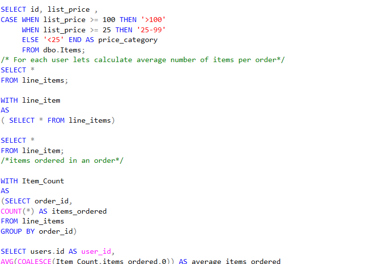
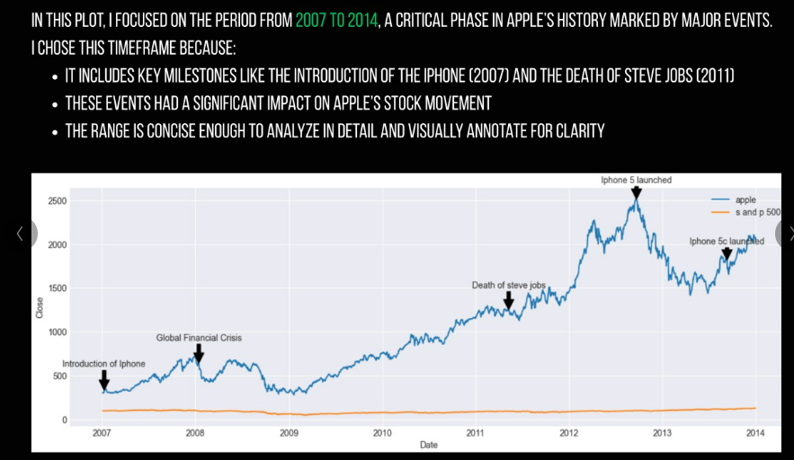

Explore My Work
I learn best by doing. Below is a curated selection of my hands-on projects across analytics, visualization, and modeling.






Data Analyst passionate about solving real-world business problems using data.
Skilled in SQL, Python, Excel, and Tableau with hands-on experience in analytics and visualization.
I learn best by doing. Below is a curated selection of my hands-on projects across analytics, visualization, and modeling.

End-to-end data lifecycle for an e-commerce business, transforming raw operational data into high-quality, analytics-ready insights to drive strategic, data-driven decisions.

Identified churn risk patterns in Waze user behavior to support smarter retention decisions. Insights highlight reduced driving activity as a key early churn indicator.

A comparative financial analysis exploring risk, return, and diversification using historical stock market data. The comparison highlights a classic risk-return tradeoff : Higher potential reward usually comes with higher uncertainity. It also reinforce the importance of diversification in long-term investments.
The Titanic disaster is often remembered as a tragic accident, but survival was far from random. This project analyzes survival patterns to understand how gender, age, and passenger class influenced the chances of survival. Visualized key patterns using Python and an interactive Tableau dashboard.

An exploratory data analysis using clustering and statistical testing to examine how multiple substance use patterns relate to perceived mental health outcomes.Found a statistically significant association between polysubstance use patterns and poorer perceived mental health outcomes.